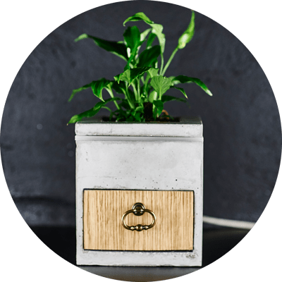
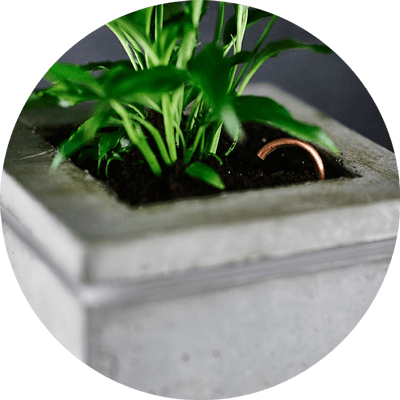

#hej
#hej is a real plant which reacts on touching. If you touch the plant it will recognize it and trigger a phone call. Another plant will receive the call and will water itself.
Emotional communication
Digital media made us communicate more, but this does not mean, that we communicate better. #hej is a more emotional way to tell another person that you care about him/her.
-

HOW
If you want to communicate with the person with which the plant is connected, you have to touch the plant and wait for the feedback light. When #hej recognizes that the partner plant has been touched, your plant receives water. It doesn't matter where you or your partner is, #hej will take care of the connection between both of you.
-

IT
Each plant has its own mobile number. Both plants just have to be pluged in to a power source and your are good to go! #hej has no visible digital connection, so you won't be disturbed by any incomming messages.
-
WORKS
If you want to take care about your relationship, then you just have to touch your plant and the other plant receives not only water, but also some love.
"Turn your digital devices off and stay connected with the person(s) you like the most..."
Emotional communication
Digital media made us communicate more, but this doesn't mean we communicate better. #hej is a more emotional way to tell an other person that you care about him/her. Touch the plant for a couple of seconds and your partner will feel and see the connection. The project is not meant to replace other digital communications, it is just a better way to communicate more physical adn more emotional.
Building the flowerpot
Still beeing a student, the building of the #hej pot took around 5 weeks without any professional help. I meet a bunch of nice people who are interessted in helping me in a more professional way. During the process of altogether 4 month I learned a lot about building materials and how the react on electronics. The flowerpot is easy to replace if a plant dies (I really hope that this will not happen), you can easily replace the plant. The connected sensor will recognize the new plant and you can touch it like normal.
~ ~ ~ ~ ~
The first prototype was a bunch of work. The smallest part was the electronics. Buildung a suitable conrete box and the perfect mold was the hard part. I made several sketches with pen and paper and with the beutiful easy google sketch up tool for the pot.
~ ~ ~ ~ ~
Tech Stuff
#hej has a capacity sensor (developed by Disney Research) which is highly sensitive and can meassuere any capacity change in the plant. The sensor is only connected to the earth of the plant, so it is not visible. I was able to build a very cheap sensor with this nice tutorial here: Inststructables. My goal was, that the owner of #hej doesn't need to do any installation. So WLAN was not an option. I came accross the FONA module by Adafruit. With that you can trigger some action by phone call or SMS which is really perfect for this kind of project.
Future plans
At the moment the plant takes much time to build (approximately 1 day), because I have to build the mold with wood and with very high presition. With the wooden mold you can only make max 3 plant boxes. I am looking for people who are able to build a better and a longer lasting mold with which I am able to build many more #hejs in less time. Another hurdle is the phone connection.